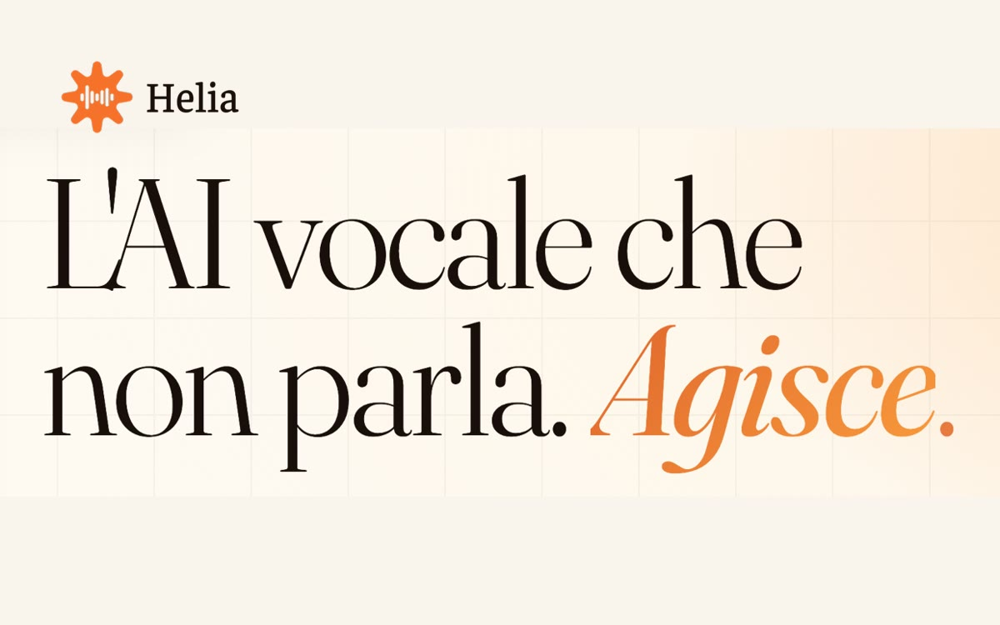

Helia
Voice AI that acts.
The AI voice agent for business customer care.
Products, entrepreneurial initiatives and social impact projects. Different ways of sharing skills, experience and opportunities.

Helia
The AI voice agent for business customer care.

Search Bridge
The European GEO and AI visibility platform for brands.

Arianna
The digital guide for caregivers and families in everyday care.

Vivilo
Personalised photos, videos and reels for every participant at an event.

Dynamo Camp
Free recreational therapy for children with serious or chronic illnesses and for their families.
Tell us which activity you want to improve, who is involved and which tools you use. We’ll define the first step from there.
Let’s talk